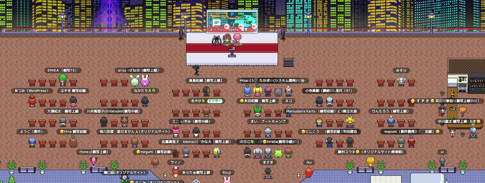
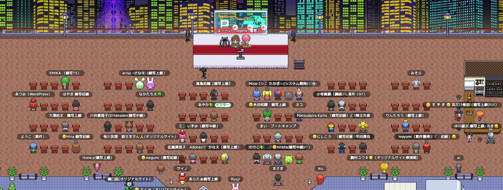

WORRY ABOUT
こんなお困りはありませんか？
01/03
自分で調べても思うような答えが出てこないですし、だんだん楽しく無くなることはありませんか。
02/03
わからないことだらけで1行打つだけでもうご飯準備しないといけない時間になっていたりしてモチベーションが下がることはありませんか。
03/03
プログラミングを始めたいけど、何から始めればいいかわからないことはありませんか 。
M i t u b a c h i

こんなお困りはありませんか？
自分で調べても思うような答えが出てこないですし、だんだん楽しく無くなることはありませんか。
わからないことだらけで1行打つだけでもうご飯準備しないといけない時間になっていたりしてモチベーションが下がることはありませんか。
プログラミングを始めたいけど、何から始めればいいかわからないことはありませんか 。
 

MetaLifeってどんなところ?
01/03
MetaLifeを利用している生徒さんはお互いに助け合う文化がありそこで各々のスキルアップや時間効率を上げている方が多く在籍しています。
02/03
運営陣によるセミナーを毎週月曜日の21時に開催中、スキルアップを目指す方や今後のキャリアの相談なども受け付けています。
03/03
毎月2回ほど交流を深めるために運営陣や講師陣と生徒さんとのイベントを開催し、横のつながりを増やすことを目指しています。

使用料金について
毎月¥○○○で参加可能 !
よくある質問
A毎日5:00〜25:00に開催しております。
A基本オンラインで開催しているイベントでは費用はかかりません。
A
土日より平日に参加している人が多いです。参考までに朝、昼、夜のピークを記載しておきます。
朝：6:00〜7:00 昼：12:00〜14:00 夜：20:30〜23:00
Aここは作業会で学習を加速させる場所なので、遠慮なく質問して問題ないです！
皆さんの声
作業会の存在は知っていましたが、気後れしてしまい参加はしていませんでした。 しかしオフ会で「一人で悩むより学習が捗るよ」と背中を押されて参加しました。 すると、周りの方々が気軽に話しかけてくれ、講師以外にもすぐ質問できる温かい環境がありました。 おかげで今では、一人で悩んでいた頃とは比べ物にならないほど、学習速度もモチベーションも格段にアップしました。
30代女性
在宅で副業がしたくてプログラミングを始めましたが、一人での学習は不安でした。 そんな時、作業会に参加してみると、同じように頑張るママさんをはじめ、境遇の近い仲間たちに出会えました。 そんな人たちとお話しして、「一人じゃないんだ」と実感できたことで、安心できました。 今では一緒に作業をしながら、モチベーション高く、楽しく勉強を続けられています。
参加する前は、本業の多忙や体調不良で、学習のモチベーションが低下していました。 その際にに案内があった「初心者講習会」に参加したら、同じ悩みを抱えている人が多くて驚きました！ そこから作業会もに参加し、月曜のセミナーの内容を実践したら学習がとても捗りました！ 是非、一人で悩む方に参加してみてほしいです！